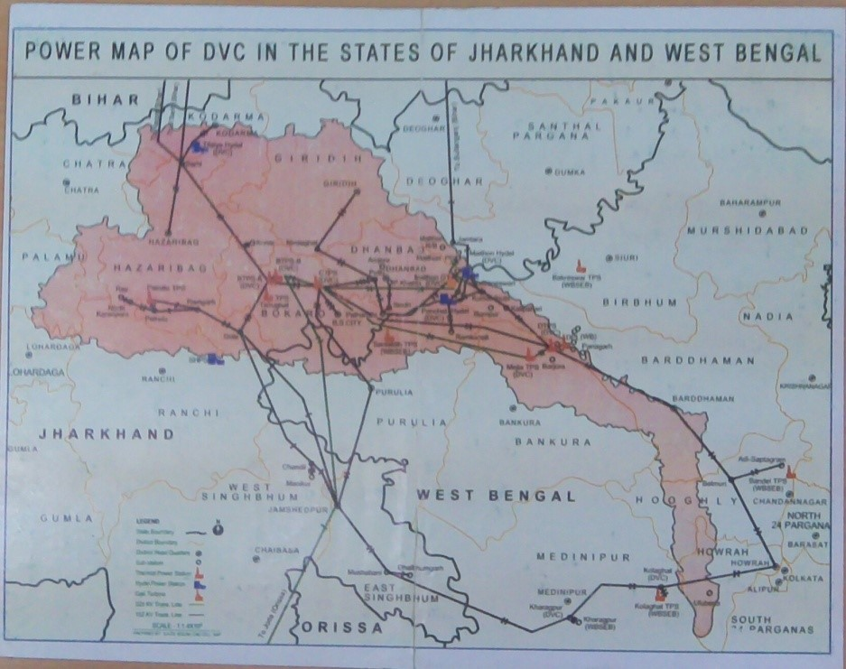
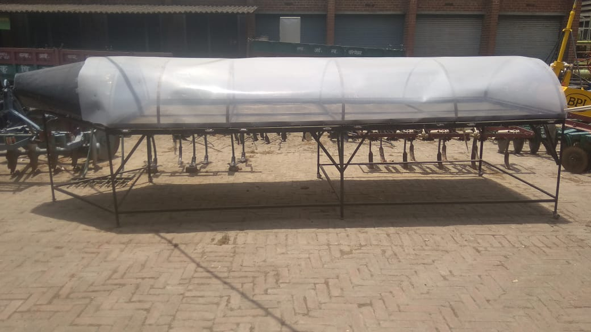

Exploring Earth Engine catalog with Python
Geospatial data form the backbone of a modern society. It is useful in making smart decisions. Python is a very powerful language that can be used to work with geospatial data.
Geospatial data form the backbone of a modern society. It is useful in making smart decisions. Python is a very powerful language that can be used to work with geospatial data.

Some places are naturally prone to soil erosion, water erosion and ground water depletion. In those places some engineering structures need to be constructed inorder to preserve the environment.

Mapping streamlines within a watershed is useful for efficient agriculture planning. From the streamlines, the characteristics of a watershed can be studied and suitable actions can be followed up with.

Solar Tunnel Dryer does not cost much but its benefits outweighs its cost. We used the STD to prepare potato chips. Due to the large size of the dryer and less energy requirement it promises to be a useful tool especially for marginal farmers.